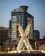

Informações sobre Luanda
Nesta página podes conhecer melhor a cidade de Luanda, a sua geografia, população e algumas curiosidades.
Dados da cidade
| População | Milhões de habitantes |
|---|---|
| País | Angola |
| Localização | Costa oeste de África |
| Clima | Tropical semiárido |
5 curiosidades sobre Luanda
- Luanda é a capital de Angola.
- Está localizada junto ao Oceano Atlântico.
- É um importante centro económico e cultural.
- Possui um clima tropical semiárido.
- Foi fundada pelos portugueses em 1576.
